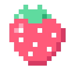
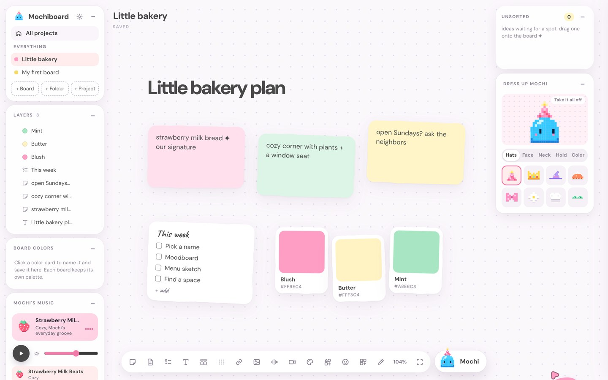

That’s the question underneath Mochiboard. Not “how do we rebuild Figma”, but what happens to the thinking when the making gets this fast. Claude Code can build an experience in an afternoon. The part it can’t do is hold the idea in a shape you can see, move around and argue with before it’s built. A chat is a list. A design is a space. Mochiboard is the space, and Claude is what you hand it to. Where it sits ↓
I plan everything on a canvas. Sticky notes, screenshots, half ideas, little arrows between them. I've used a lot of tools for that, and they're great, but none of them felt cozy. And none of them had Mochi.
So I built Mochiboard. It's a soft, pastel canvas for your Mac or PC where Mochi lives in the corner. You dump ideas, she helps you sort them. You ask for fonts, she puts real type on the board. You describe an app, she wireframes it. Then she flies you right over to whatever she made.
I first built Mochiboard for designers, people like me who think in wireframes, fonts and flows. Then I noticed I was planning everything on it: my week, a birthday, a friend’s bakery idea. It wasn’t really a design tool. It was a place to think.
So I opened it up for anybody and everybody. Notes, voice memos, videos, checklists and Mochi work for anyone with an idea, and the design tools are still there when you want them. And it’s completely free. No account, no subscription, no catch.
I’m a little tired of the best design tools living behind paywalls, and of every good idea turning into a subscription. So Mochiboard is also an argument. I wanted to prove you can make something people genuinely love because you care about the work, and then just give it to them.
- No paywall. Every feature, for everyone, forever. There’s a tip jar. That’s the whole business model.
- No account. Nothing to sign up for, nothing to remember, nothing to lose.
- No cloud. Your boards are plain files on your own computer. Nothing is uploaded.
- No lock-in. The code is open source. If I disappeared tomorrow, Mochiboard wouldn’t.
- No AI required. Mochi helps more with Claude connected, but every tool works without it, and she explains things herself.
- No tracking. No analytics, no ads, no cookies. I find out how it’s going when people tell me.
Every one of those was a moment where the normal move was to take something. People can tell when a thing was made by someone who loves the work. That’s the part I most wanted to prove, and the kind words just below are the proof I didn’t expect.
People sometimes ask if Mochiboard is trying to be Figma. It isn’t. If you have Figma, it’s a great tool and you should keep using it. Mochiboard is for the part that comes before, and for a problem I kept running into.
A lot of my process has moved into Claude. I describe something, it builds it, we go back and forth. It’s fast, and I love it, but the design thinking gets lost in there. Everything lives as a long list of chats, in the order it happened, and I can’t see the whole idea at once. My brain doesn’t work in a list. It works on a table where I can move the pieces around until they make sense.
So that’s what Mochiboard is: an ideation space that sits in front of Claude. I organize the thinking here, the flows, the screens, the notes about why, and then I give Claude the experience the way I’ve defined it, instead of hoping it comes out of a prompt. The canvas is where the idea gets its shape. Claude is where it gets built.

Want to play with it?
It’s free. Try it right here in your browser, or take the app home for Mac or Windows. The full tour lives at mochiboard.app ↗
downloads on Mac
and Windows so far
people starred it
on GitHub
and it updates
itself from Settings
Meeting Mochi
The first time you open it, Mochi says hi and walks you through setup: her color, light or dark, her helpers, how chatty she should be. Then she gives you a hands-on tour, and notices when you try each thing.
I wanted the canvas to be great on its own. Mochi is the cherry on top, not the cake. Everything in this part works with her thinking switched off.
Notes, collections and docs
Style a note from its little toolbar, add a label, drag cards into a collection, and open a doc for the longer thinking.
Dump it, then sort it
Press ⌘K anywhere and type. Ideas land in Unsorted so you never lose your place. When you’re ready, ask Mochi to sort them.
Voice memos
A little countdown, then talk. When you stop, it writes itself out right on the card, and Mochi offers to turn it into notes.
The canvas itself
Checklists, titles, colors that name themselves, stamps, drawing and curvy connectors. Loose and a little tilted, like paper on a desk.
Building a wireframe by hand
Drop a phone screen, then pull pieces in. The nav bar snaps to the top, the tab bar to the bottom, and everything else lines up as you go.
Projects and folders
Make a project, add folders inside it, drag boards in. Then see it all on Home, where every folder has a little face.
Moving things around
Right-click anything to rename, move or duplicate it. And yes, there’s a dark mode.
I’ll be honest: none of these tools are new. Figma, FigJam and Causal have most of them, and they do them well. What I wanted was all of them in one cozy place made for planning, sized for the way I actually think, with a little helper who can use every single one.
Notes
Sticky notes with colors, sizes, bold and a little label like “step 1”.
Most ideas start as one line. Notes tilt a bit so the board feels like paper, not a spreadsheet.
Quick capture
⌘K from anywhere drops an idea into Unsorted.
My brain jumps around. This lets me catch a thought without losing my place.
Collections
Stacks that hold cards. Drag a card in and it lines up.
Grouping is how I think, so it had to be one drag, not a menu.
Docs
Real documents: styles, fonts, colors, lists and tables. Download them as a PDF or a Word file.
Some ideas grow up. They need room to become paragraphs without leaving the board.
Checklists
A to-do card you tick off right on the board.
Half my notes are secretly to-do lists anyway.
Titles
Big words to mark a part of the board.
Boards get big. I wanted signposts I could read zoomed out.
Voice memos
Talk instead of type. A 3, 2, 1 countdown, then Mochi writes it out.
Some ideas come out faster out loud. The countdown came from testing: my first words kept getting cut off.
Videos
Record yourself right on the board, wide or phone-shaped. Flip the camera, then Mochi can write out what you said.
Some ideas need a face and a voice. A ten-second video shows how it should feel, not just what it is.
Links
Paste a link and it becomes a card with a preview.
My research lives in forty tabs. This gets it out of them.
Images
Drop or paste a picture, then crop it.
Inspiration is mostly screenshots.
Colors
Pick from a wheel and the color names itself. Save it to the board.
I’m a designer. Colors deserve names, and every board has its own palette.
Shapes
Circles, stars, arrows and blobs in any color.
For quick diagrams, and for fun.
Stamps
A wheel of hand-drawn pixel stamps and little Mochis, some of them move.
Feedback should be cute. A tiny Mochi says more than a thumbs up.
Draw
A soft pen, a marker and a highlighter in any size, plus an eraser.
Sometimes you just need to circle something.
Connectors
Curvy lines between cards. Bend them, add arrows, make them dashed.
Thinking is mostly connecting things.
Wireframes
Screens, boxes, text, icons and ready-made pieces that snap into place.
Going from idea to layout without leaving the board, or opening another tool.
Projects + folders
Projects hold folders, folders hold boards. Each folder has a little face.
Planning is never one board. I wanted to see everything at once, and smile at it.
Layers
Everything on the board in one list. Rename, hide, lock and restack.
Boards get busy. Sometimes you need to find the one thing.
Templates
Affinity maps, journey maps and more, ready to fill in.
A blank board is the hardest part. These give you a starting shape.
Mochi runs on Claude Code on your computer. She can read the whole board, so she knows what you’re making. Every answer comes with two or three ideas for what to do next, so you never stare at a blank chat.
Ask her anything
I asked what I was missing for a first banking app. She added a Trust group and a little launch list, then glided me right to it.
Real type, not font names
Ask her to explore fonts and she puts real specimens on the board, from your computer or from Google Fonts. Click one to swap it, or type your own words in it.
Inspiration from Mobbin
With the Mobbin connection, she pulls real app screens onto the board. Then you can ask what they have in common, and she writes it down next to them.
Wireframes from a sentence
“Wireframe Penny’s sign-up flow” turns into three real phone screens, built from the same pieces you use by hand, with arrows between them and a note under each one.
A whole landing page
She builds full pages from website sections, in your colors and fonts. Picture spots are labeled with what belongs there. Fill them with Higgsfield, or have Mochi draw simple illustrations for free.
I use Mochiboard every day, so it keeps getting better. Here’s what I added since launch. Every update is on the Mochiboard updates page ↗.
Docs, for real
Docs grew up. Styles, any font on your computer, colors and highlights from your board, lists, tables and pictures. Select a sentence and ask Mochi to make it shorter or friendlier. Then download it as a PDF or a Word file.
Make it yours
Your name rides along on your cursor, in your color. Pick the board, dots, panels and accent too, or right-click a board to give just that one its own background.
Layers
Everything on the board in one list, like Figma. Rename, hide, lock and restack. Pick a layer and Mochi pops up on it so you can find it.
Design thinking templates
Affinity maps, journey maps, impact and effort, how might we. Each one comes with an example and a little how-to note from Mochi.
Reshape wireframes
Drag any corner to resize a piece. Double-click to reach inside a button and reshape just the part you want.
Any pen size, pixel stamps
A slider for every thickness, and the stamps are all hand-drawn pixel art now, in Mochi’s style.
Dress up Mochi
Mochi has a closet now. Party hats, heart shades, a cozy scarf, a balloon. She wears her outfit everywhere she shows up. Go on, hover to try things on and click to wear them.

Mochi’s music
Three little lo-fi loops for focusing, each with a Mochi name. They loop right on the last bar, so the music never stops to breathe. Press play.
Videos on the board
Record yourself wide or phone-shaped, flip the camera, then Mochi writes out what you said. A voice memo, but you can see how it should feel.

Now on Windows
Same board, same Mochi, on a PC. Shortcuts say Ctrl, voice memos get written out right on the computer, and it updates itself.
Take Mochiboard home.
It’s free and open source. It runs on a Mac (macOS 13 or newer) or a Windows 10 or 11 PC.
Download for Mac Download for Windows Try it in your browser ↗- Unzip it and drag Mochiboard into your Applications folder.
- Open it. It’s signed and notarized with Apple, so it opens on the first double-click, and Mochi says hi.
- Run Mochiboard-Setup.exe. It installs in a few seconds, no admin needed.
- If Windows says it “protected your PC”, click More info, then Run anyway. Just once, then Mochi says hi.
A native Mac app (and a Windows one) with a web canvas inside, built with Claude in the loop.
 Claude CodeBuilding it, and Mochi’s brain
Claude CodeBuilding it, and Mochi’s brain Mobbin + HiggsfieldMochi’s optional helpers
Mobbin + HiggsfieldMochi’s optional helpers